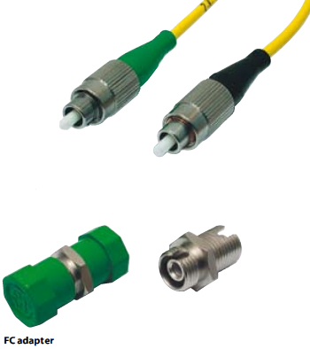

FC standard
- For applications in the largest telecommunication
networks.
- Standard connector in the transmission networks
of the largest telecommunication operators.
- According to norm JIS C5970, NNT, IEC, TIA, Bellcore.
Connectors
- Remarkable eccentricity of the hole thanks to the hole
diameter tolerance from 0 to + 1 µm.
- Zirconium ferrule ensures very good resistance at the
changing temperatures (operating temperature range
from -40 °C to +85 °C).
- Assembly of the ferrule with an adhesive protects
the fibres against impact strength.
- Machine polishing procedure ensures high quality
of end face geometry and high repeatable performance.
- Each connector is adjustable, what ensures outstanding
transmission parameter.
- End face geometry is controlled with an interferometer.
Adapters
- Sleeve of the adapter is manufactured from zirconium
dioxide, enabling high precision of the connection.
- high durability.
- Available in SQF and D-shape version.
Connection type
- With anti-rotation key as protection of the ferrule end
face against scratching or rotation by mating cycles.
Connector type
- Single mode and multimode connectors.
- Following cables can be equipped with this connector
type: 900 um tube or PVC cables with the following
diameters: 1.7; 2.0; 2.4 and 2.8 mm.
- Possible polishing procedures: SuperPC, UltraPC
and AnglePC.
Application
- Telecommunication, external and access networks.
- WDM networks.
- LAN/WAN networks.
- CATV networks.
